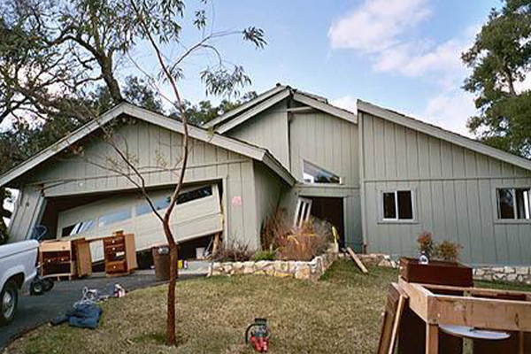
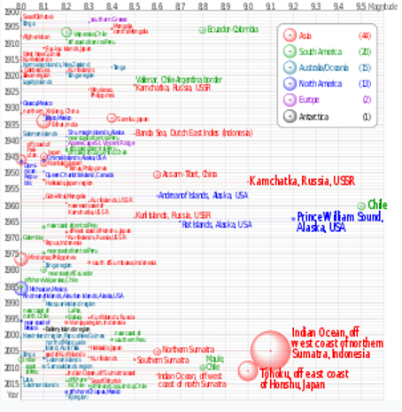

An earthquake (also known as a quake, tremor or temblor) is the shaking of the surface of the Earth resulting from a sudden release of energy in the Earth's lithosphere that creates seismic waves. Earthquakes can range in intensity, from those that are so weak that they cannot be felt, to those violent enough to propel objects and people into the air and wreak destruction across entire cities. The seismic activity of an area is the frequency, type, and size of earthquakes experienced over a particular time period. The seismicity at a particular location in the Earth is the average rate of seismic energy release per unit volume. The word tremor is also used for non-earthquake seismic rumbling.
This video has not sounds
At the Earth's surface, earthquakes manifest themselves by shaking and displacing or disrupting the ground. When the epicenter of a large earthquake is located offshore, the seabed may be displaced sufficiently to cause a tsunami. Earthquakes can also trigger landslides.
If you want to know more deatails about EPICENTER & HYPOCENTER click on the below image.
In its most general sense, the word earthquake is used to describe any seismic event—whether natural or caused by humans—that generates seismic waves. Earthquakes are caused mostly by rupture of geological faults but also by other events such as volcanic activity, landslides, mine blasts, and nuclear tests. An earthquake's point of initial rupture is called its hypocenter or focus. The epicenter is the point at ground level directly above the hypocenter.
The sound of the earthquake
Environmental changes that herald an earthquake
Warning signs that may indicate an earthquake is imminent can include: Erratic animal behaviours such as scared or confused pets or birdcalls not usually heard during the night. Sudden water level changes in wells or artesian bores.
How earthquakes happen
Earthquakes are usually caused when underground rock suddenly breaks and there is rapid motion along a fault. This sudden release of energy causes the seismic waves that make the ground shake.
The size of the earthquake is measured by the Richter unit
The Richter scale measures the largest wiggle (amplitude) on the recording, but other magnitude scales measure different parts of the earthquake. The USGS currently reports earthquake magnitudes using the Moment Magnitude scale, though many other magnitudes are calculated for research and comparison purposes.
This video has not sounds
HOW DO EARTHQUAKES CAUSE DAMAGE
Earthquake destruction begins with the earth’s violent shaking that can rupture the earth, trigger landslides and turn the surface of the earth to liquid. The damaging shaking of major earthquakes can be felt hundreds of miles away.

A house damaged in the 2004 San Simeon earthquake. Photo credit: FEMA News.
Ground Shaking & Structural Failure
Ground shaking is the vibration of the ground during an earthquake. The shaking triggers other hazards such as liquefaction and landslides. Most earthquake damage results from the seismic waves passing beneath buildings, roads, and other structures.
Click the button below to display a Sensitive Picture.
Sensitive Picture
Surface Rupture & Ground Displacement
The primary earthquake hazard is surface rupture. It can be caused by vertical or horizontal movement on either side of a ruptured fault. Ground displacement, which can affect large land areas, can produce severe damage to structures, roads, railways and pipelines.
Landslides
Earthquakes can trigger landslides and mudslides, especially in areas with water-soaked soils. Landslides may result in falling rocks and debris that collide with people, trees, animals, buildings and vehicles. They also can block roads and disrupt utility lines.
Liquefaction
The shaking from an earthquake can turn loose soil into a liquid during an earthquake.
Liquefaction can undermine the foundations and supports of buildings, bridges, pipelines, and roads, causing them to sink into the ground, collapse or dissolve.
Tsunamis
Tusunami FactsAn earthquake generated within the Pacific Ocean floor will generate a tsunami, which is actually a series of very long waves. Large tsunamis which travel to the ocean floor to the surface are dangerous to human health, property, and infrastructure. Long lasting effects of tsunami destruction can be felt beyond the coastline.
Fires
Earthquake damage facts show fires caused by earthquakes are the second most common hazard. Earthquake fires start when electrical and gas lines are dislodged due to the earth’s shaking. Gas is set free as gas lines are broken and a spark will start a firestorm.
This videos has not sounds
The Biggest Earthquakes in the world
1960 Valdivia earthquake
The 1960 Valdivia earthquake and tsunami (Spanish: Terremoto de Valdivia) or the Great Chilean earthquake (Gran terremoto de Chile) on 22 May 1960 was the most powerful earthquake ever recorded. Various studies have placed it at 9.4–9.6 on the moment magnitude scale.[1] It occurred in the afternoon ( GMT, local time), and lasted for approximately 10 minutes. The resulting tsunamis affected southern Chile, Hawaii, Japan, the Philippines, eastern New Zealand, southeast Australia, and the Aleutian Islands.The epicenter of this megathrust earthquake was near Lumaco, approximately 570 kilometres (350 mi) south of Santiago, with Valdivia being the most affected city. The tremor caused localised tsunamis that severely battered the Chilean coast, with waves up to 25 metres (82 ft). The main tsunami traveled across the Pacific Ocean and devastated Hilo, Hawaii, where waves as high as 10.7 metres (35 ft) were recorded over 10,000 kilometres (6,200 mi) from the epicenter.
The death toll and monetary losses arising from this widespread disaster are not certain.[5] Various estimates of the total number of fatalities from the earthquake and tsunamis have been published, ranging between 1,000 and 6,000 killed.[4] Different sources have estimated the monetary cost ranged from US$400 million to $800 million[6] (or $3.66 billion to $7.33 billion in 2021, adjusted for inflation).
Lists of 21st-century earthquakes
The following is a summary of significant earthquakes during the 21st century. In terms of fatalities, the 2004 Indian Ocean earthquake was the most destructive event with around 227,898 fatalities, followed by the 2010 Haiti earthquake with 160,000 fatalities, 2005 Kashmir earthquake 87,351 fatalities and 2008 Sichuan earthquake with 87,587 fatalities.
The 2011 Tōhoku earthquake and tsunami became the costliest natural disaster, resulting in approximately $360 billion in property damage at the time, followed by the 2008 Sichuan earthquake which resulted at least $150 billion in damage.

Animated Map of all world earthquakes from 2001-2015 Earthquakes of magnitude 8.0 and greater from 1900 to 2018. The apparent 3D volumes of the bubbles are linearly proportional to their respective fatalities.
DO NOT use the elevators. The electricity may go out, and the sprinkler systems may come on.
If you are trapped, stay calm. Try to get someone's attention by tapping on hard or metal parts of the structure.
Click on the Triangle below for more information
Follow the steps below for property protection
World health organization says, WHO
Between 1998-2017, earthquakes caused nearly 750 000 deaths globally, more than half of all deaths related to natural disasters. More than 125 million people were affected by earthquakes during this time period, meaning they were injured, made homeless, displaced or evacuated during the emergency phase of the disaster.
Death percentage of people who died from earthquakes in the last five years
54.5% 3% 2.2% 25.8% 14.6%
Comments Section
I'm Nayani Tharushika.I am Undergraduate student (20APC4653) in Sabaragamuwa University of Sri Lanka.This is my first web page in HTML.Can you give me a little feedback?
If you like to Enter your name.You can enter below.
If you have to tell me Something.You can send me a Email.